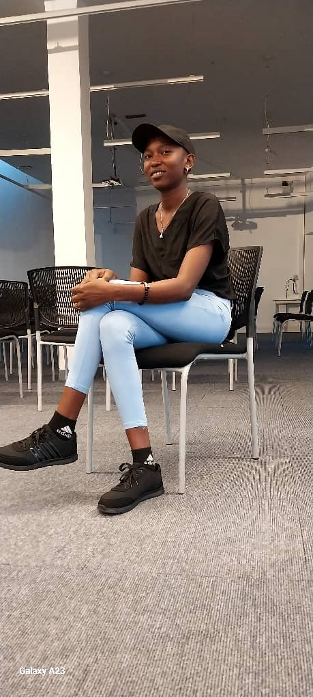

About Me
In the southern heartland of Sudan, amidst the arid landscapes and the relentless sun, there lies a village called Kalkada. It was here that I Islam Omar Hemada came into the world, born into a family of thirty members. Life in Kalkada was marked by enduring hardships, where even the most basic necessities, such as food, education, and clothing, were often elusive dreams. In my eyes, education was the key to breaking freedom from the relentless cycle of poverty that had gripped my family and the village for generations. Despite the scarcity of resources and limited access to quality education, I was determined to learn. Against all odds, I completed my primary education. However, adversity only fueled my determination. I completed my high school education, demonstrating a remarkable commitment to learning despite obstacles. As I pursued my dreams, my family back in Kalkada supported me emotionally, holding onto the hope that my sacrifice would lead to a brighter future. One of my primary objectives is to empower the youth of Kalkada through education and skill development. I believed that by providing access to quality education and vocational training, I Would break the cycle of poverty that had gripped the village for generations.
Skills
- . Data Analytics
- . Communication skills
- . Problem Solving
- . Teamwork
- . Leadership
- . Python
- . Html and css
Work Experience
-
Teacher
DOE, yida, Ruweng Adminsrative Area, Juba, South Sudan
Dec, 2018 - Feb, 2020
My role was to plan and prepare appropriately the assigned courses and lessons, To demonstrate competence in classroom instruction, To plan and implement effective classroom management practices, To define and communicate learning expectations to students, To assign reasonable assignments and homework to student as per school rules, To evaluathe the students' performance in an objective, fair and timely manner, To evaluate student perfomance use of language, oral and written, To foster student self-control, self-discipline and responsibility to other, To model and promote empathy, compassion and respect for the gender, ethnic, religious, culture and learning diversity of students.
-
COVID-19 Contact Tracer
African humanitarian action, Rwange Administrative Area, Juba, South Sudan
October 15th, 2021 - August 19th, 2022
My role was to place phone call to an newly diagnosed patients and potentially exposed people, Educate contact on approved protocol to reduce the risk of spread, Collect and document necessary information, Protect patient privacy, and Ask questions that help someone remember who they have been in close contact with.
Education
-
Bachelor Degree in software engineering
African Leadership University - Rwanda
2022 - Present
-
Certificate
Soba Secondary School - South Sudan
2014 - 2017
South Sudan Secondary School Certificate (S.S.S.S.C.)
-
Certificate
Kauda Primary School - Sudan
2005 - 2013
Kenya Certificate of Primary School (K.C.P.E.)
Projects
-
AirBnB_Clone
This is the project we worked on in team of two where all the development and testing was runned over an operating system Ubuntu 20.04 LTS using programming language Python 3.8.3. The console create your data model manage (create, update, destroy, etc) objects via a console / command interpreter store, and persist objects to a file (JSON file) The first piece is to manipulate a powerful storage system. This storage engine will give us an abstraction between “My object” and “How they are stored and persisted”. This means: from your console code (the command interpreter itself) and from the front-end and RestAPI you will build later, you won’t have to pay attention (take care) of how your objects are stored.
-
Islam's Weather App checker
The Weather App allows users to enter a city name in the input field, and then click the "Search" button. Upon clicking the button, the app fetches weather data for the entered city from the OpenWeatherMap API and displays it on the page. The displayed weather information includes the city's name, current temperature in Celsius, and a description of the weather conditions.